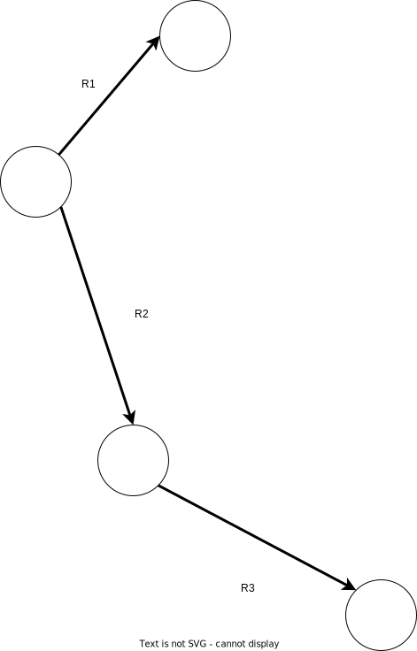
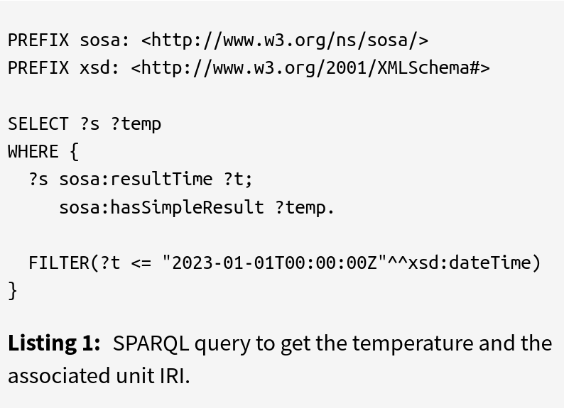
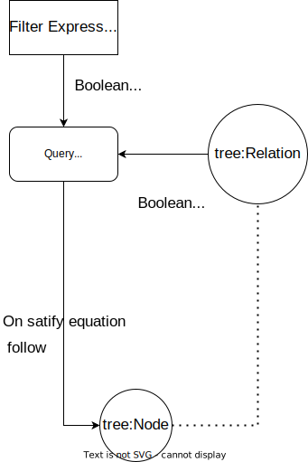
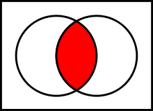
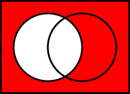
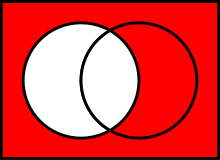

An tradeof between client a server cost for SPARQL
interface

Can we published static RDF files in a way that will diminish the client cost?
Agenda
-
Introducing the TREE specification
-
Formalization
-
Early benchmark
-
Future work
Introducing the TREE specification
- Fragmented database over linked data
-
Graph
- Vertex/Node (tree:Node) are
the
data container
- Edge (tree:Relation)
declare a constraint on the data inside a vertex
-
The document can grow over time
-
We don't maintain a central index
- We use Link Traversal Query Processing to fetch the data

We can traverse the collection to answer our query
Link Traversal Query Processing


How can we exploit the relations between our nodes
Guided Link Traversal Query Processing
- We take advantage of a priori knowledge or meta
knowledge (understanding) for the choice of links
-
Structure of a document
-
Discovery of knowledge
What is the problem more formally
-
We solve a boolean equation combining
- SPARQL filter expression
- tree:relation expression
- On satisfaction of the equation we follow the link

Strategy of resolution
-
We calculate the domain of each sub expression and represent it as a set [lower bound, upper bound]
- We concatenate the expression based on the boolean operator
-

AND
 OR

NOT
OR

NOT
- The domain is a set of set containing the domain (subdomain) of each expression
Benchmarking
-
Query engine Comunica
- Well tested (test coverage 100%, Have been used in multiple papers)
- Modular and easily extendable

Benchmarking
-
Data
-
Time series, public transportation
-
Local, online
-
Different topologies
-
B-tree like structure
-
Link list
-
-
Parameters evaluated
- Number of requests
- Query execution time
- Number of results
Future work
-
Benchmarking of the query clients
-
Support for string
-
Support for geolocatization data
-
Selection of views (Selection of TREE fragmentation)